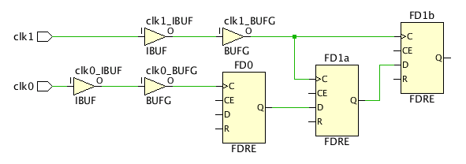

非同期クロック乗せ換えの理解
図: 非同期クロック間の安全なクロック乗せ換え (CDC) の例

この例では、デザイン クロック clk0 および clk1 が異なる入力ポートを介してデバイスに入っており、既知の位相関係がない (非同期) 状態になっています。デフォルトでは、set_clock_groups、set_false_path または set_max_delay -datapath_only などのタイミング例外制約が適用されていない限り、Vivado® ツールで FD0 から FD1a までのパスが標準的な同期パスのようにレポートされます。これらのタイミング例外は、すべてのクロッシング パスに適切な非同期クロック乗せ換え回路が使用されている場合にのみ安全に使用できます。clk0 および clk1 は非同期なので、FD1a/D のセットアップおよびホールド スラックが正確に計算できず、FD1a がメタステーブルになる可能性があります。
この例の場合、ダブルレジスタ シンクロナイザー (FD1a および FD1b) があります。このシンクロナイザーがあると、メタステーブル ステートが伝搬される可能性がかなり低くなります。両方のシンクロナイザー フリップフロップ (FD1a および FD1b) で ASYNC_REG プロパティが TRUE に設定されている場合、Vivado 合成でこれらのフリップフロップがファブリック レジスタ (例 : FDRE) にマップされ、Vivado 配置でこれらが同じスライス (7 シリーズ) または CLB (UltraScale™ デバイス) にパックされ、平均故障間隔 (MTBF) が最適化されるようになります。最後に、この例には clk0 から clk1 へのパスが 1 つしかなく、clk1 から clk0 へのパスはないので、次のいずれかの制約が使用できます。
set_clock_groups -asynchronous -group clk0 -group clk1 -or- set_false_path -from [get_clocks clk0] -to [get_clocks clk1]
重要 : set_max_delay -datapath_only 制約を使用すると、非同期クロック乗せ換えパスの最大遅延を制御できます。set_clock_groups および set_false_path の優先度は set_max_delay よりも高いので、同じパスでこれらのタイミング例外を一緒に使用することはできません。タイミング制約ウィザードでは、2 つの非同期クロックの 1 つまたは両方のパスに set_max_delay -datapath_only が付いている場合は、このクロック間に set_clock_groups または set_false_path を使用することは推奨されません。ただし、これらのパスに set_clock_groups または set_false_path 制約を手動で定義することはできます。
タイミング制約ウィザードからは、非同期乗せ換え (CDC) に関して推奨される制約 (Recommended Constraints) と推奨されない制約 (Non-Recommended Constraints) の 2 つの表が生成されます。
推奨される制約 (Recommended Constraints)
この表には、無視しても問題ないパス間のクロック ペアがリストされます。 無視しても問題ないのは、次の条件が当てはまるときです。
- すべてのパスが正しく同期されている
- ASYNC_REG プロパティがすべてのシンクロナイザーで true に設定されている
- これらのクロックを行き来するパスに set_max_delay -datapath_only 制約が付いているものがない
推奨されない制約 (Non-Recommended Constraints)
この表には、次の理由から、クロック グループまたはフォルス パスのタイミング例外が推奨できないクロック ペアが表示されます。
- 同期されていない CDC パスがある
- 一部のパスに set_max_delay -datapath_only 制約が設定されている
- [Tcl Command Preview] : 安全なパスを定義するのに使用される Tcl コマンドが表示されます。これらの制約がデザインに追加されます。
- [Existing Constraints] : 現在定義されている制約を表示します。
上記のセクションにはそれぞれツールバーもあり、次のコマンドの 1 つまたは複数を実行できます
 |
Search | 検索文字列を入力するためのテキスト入力フィールドが表示されます。 |
 |
Clock Networks | 新しいクロック ネットワーク レポートを生成する [Report Clock Networks] コマンドと既存レポートを開く [View Clock Networks] コマンドを実行するためのサブメニューを表示します。 |
次のステップ
非同期クロック ペアの中には、タイミング制約ウィザードで安全な制約を推奨できないため、それらのクロック間でタイミング解析が実行されるものがあります。
- RTL に足りないシンクロナイザーと ASYNC_REG プロパティを追加します。足りないシンクロナイザーは、[Not Synchronized] 列の数値をクリックするとリストできます。
- 同期されず、set_max_delay -datapath_only 制約も付いていない CDC パスにポイント ツー ポイントのフォルス パス例外を追加します。これらのパスは、非同期クロックからと非同期クロックまでのタイミング レポートを生成すると表示できます。Vivado IDE のクロック関連性レポート (Clock Interaction Report) では、このようなタイミング レポートを簡単に生成できます。詳細は、「クロック関連性のレポート」を参照してください。
関連項目
| 『UltraFast™ 設計手法ガイド (Vivado Design Suite 用)』 (UG949) の「クロック グループおよび CDC 制約」 | |
| 『Vivado Design Suite ユーザー ガイド : 制約の使用』 (UG903) の「クロック グループ」 | |
| 『Vivado Design Suite ユーザー ガイド : デザイン解析およびクロージャ テクニック』 (UG906) の「タイミング解析機能」 | |
 |
Vivado Design Suite QuickTake ビデオ : Vivado でのデバイス リソース統計の解析 |